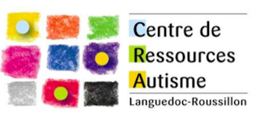
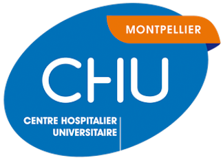

La plupart de mes expériences se sont déroulées sur Montpellier dont voici une carte partielle. Cette page ne concerne pas mes expériences en informatique.
Stages et Formation en L1 Psychologie
Stage au Centre Ressources Autisme du Languedoc-Roussillon

Stage au Centre Ressources Autisme du Languedoc-Roussillon au Sercice Médico-Psychologique de l’Enfant
et de l’Adolescent de l’hôpital Lapeyronie (mai 2015 - août 2015) sur la prise en charge et le dépistage de l’autisme et divers troubles du
neuro-développement.
J'ai été très chanceux de passer deux mois au CRA, étant le seul stagiaire et ayant pu être présent dans tout l'environemment du CRA.
Formation à l'AFREE
Formation à l’AFREE intitulée ”Troubles du comportement et analyse fonctionnelle chez la
personne avec Trouble du Spectre Autistique et/ou trouble du développement intellectuel” sur
2 jours (14 heures) en juin 2015.
Encore une fois très chanceux d'avoir pu bénéficier gratuitement de cette formation lors de mon stage au CRA.
Stages en L2 et L3 Psychologie
Stage au laboratoire Epsylon
Stage au laboratoire Epsylon EA 4556 Dynamique des Capacités Humaines et des Conduites de Santé
avec Raphaël Trouillet (sept. 2015 - janv. 2016) sur l’effet psychophysiologique du stress sur la
mémoire visuo-spatiale notamment.
J'ai beaucoup apprécié l'encadrement de ce stage et la liberté laissée dans la recherche, la possibilité
de prendre des iniatiatives qui ont été très bien reçues.
Stage au laboratoire Epsylon
Stage au laboratoire Epsylon EA 4556 Dynamique des Capacités Humaines et des Conduites de Santé
avec Denis Brouillet (janvier 2016 - février 2016) et Roman Josa sur la perception visuo-motrice et
l’évaluation des distances.
Une très bonne expérience et une vision plus poussée de la recherche et de la collaboration entre
les différentes UFR de l'université car nous utilisions un programme créé par des étudiants en Informatique.
Stage au CHRU de Montpellier

Stage au CHRU de Montpellier Hopital La Colombière, Service de Psychiatrie Adulte avec Catherine Bortolon et Stéphane Raffard (de mars 2016 à mai 2016)
sur la reconnaissance des visages (voir article), la prise en charge de la schizophrénie, des TOC et de l'anxiété sociale.
Ce fut ma meilleure expérience de stage, celle où j'ai pu avoir le plus de responsabilités, et faire exactement ce que j'aimais dans ce domaine.
C'est au cours de ce stage que j'ai co-réalisé et co-écrit un article scientifique.